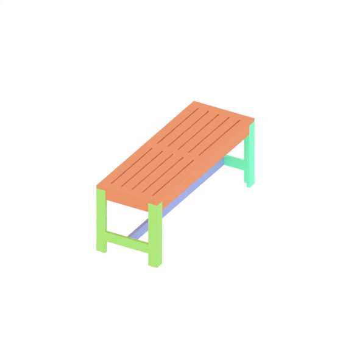
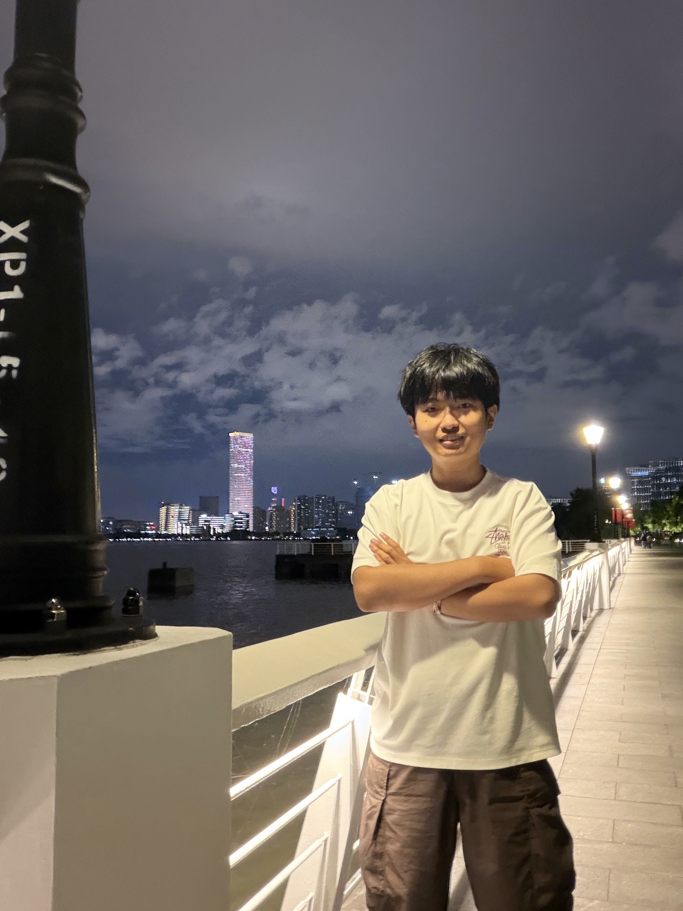
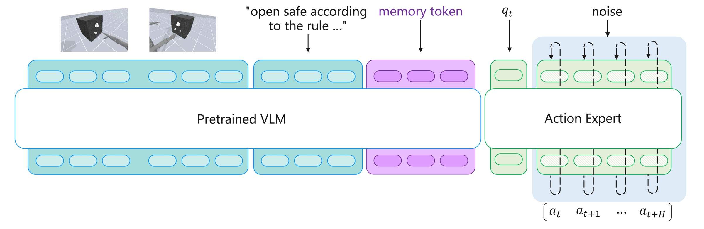
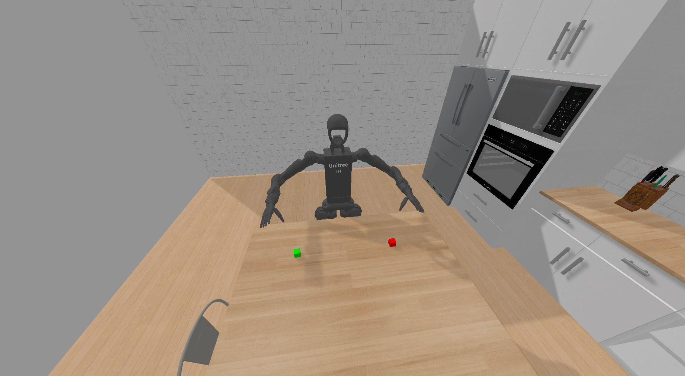

CoRL 2026
AssemLM: A Spatial Reasoning Multimodal Large Language Model for Robotic Assembly
AssemLM uses language, assembly diagrams, and 3D point clouds to infer how parts fit together.

Fudan University · Shanghai, China
I study embodied intelligence at Fudan University. My research asks how robots can work out how parts fit together, coordinate two hands, and remember earlier steps in a task.
In AssemLM, my collaborators and I use assembly diagrams, language, and 3D geometry to predict where each part belongs.
AssemLM was accepted to CoRL 2026. We also released the training code, model weights, and datasets for AssemLM 2.0.
We introduced VQ-Memory and RuleSafe, a simulation benchmark for manipulation tasks that require memory.
HumanoidGen, our work on generating two-handed manipulation demonstrations, was accepted to NeurIPS 2025.

CoRL 2026
AssemLM uses language, assembly diagrams, and 3D point clouds to infer how parts fit together.

arXiv preprint · 2026
VQ-Memory encodes past interactions as discrete tokens so a robot can act on information it no longer observes.

NeurIPS 2025
HumanoidGen turns language instructions and spatial constraints into demonstrations for two-handed manipulation.
No matching papers. Try another search or choose All work.
3 publications shown
Embodied intelligence
No entries listed yet.